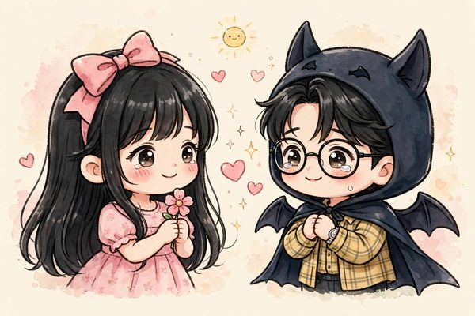
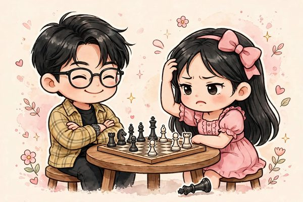
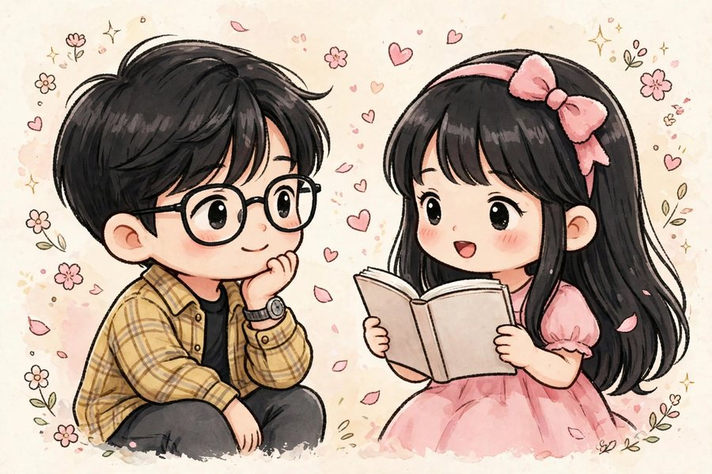
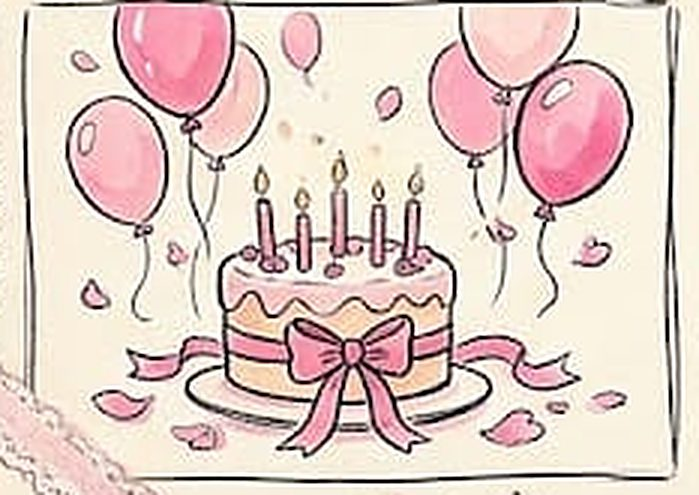
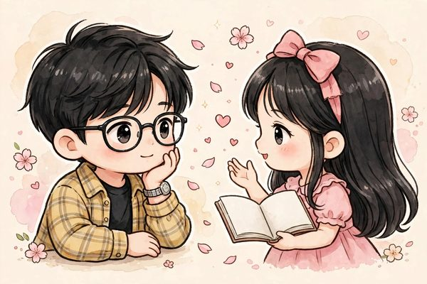

Rencana Kita ke Depan
Halaman ini tidak lagi menengok ke belakang. Isinya rencana-rencanaku ke depan, kugantung satu-satu di seutas tali yang sama, supaya kamu bisa melihatnya berurutan: dari simpul pertama, sampai simpul yang belum tahu kapan terikatnya. Talinya satu, tidak putus di tengah.

Ketemu Beneran, Bukan Cuma Suara
Selama ini kita cuma bertemu lewat suara: room game, telepon, dan chat yang kadang pakai nama samaran. Rencana pertamaku sederhana saja, kita bertemu sungguhan. Tidak ada jeda sinyal, tidak ada "suara kamu putus-putus", dan aku bisa memastikan sendiri kamu memang nyata, bukan tokoh buku yang terlalu pandai bicara.

Foto Seperti Ini, Versi Asli
Kalau sudah ketemu, kita harus foto seperti ini. Wajib, tidak bisa ditawar. Aku peace, kamu peace, dan mukamu pakai filter hotdog, persis seperti foto pertamamu yang kukenal dulu. Foto versi gambarnya sudah ada di tali ini, tinggal versi aslinya yang belum. Pose-pose begini memang agak memalukan, tapi justru itu poinnya.

Catur dan Uno, Tatap Muka
Kita main catur dan Uno lagi, tapi kali ini satu meja, bukan satu jaringan. Kamu boleh menyaksikan langsung aku menang catur, dan aku boleh menyaksikan langsung aku kalah Uno. Tidak ada lagi tuduhan menahan kartu terakhir demi memperpanjang telepon, karena kalau teleponnya tidak ada, modus itu otomatis pensiun.

Dengarkan Puisimu Secara Langsung
Kamu sudah membacakan puisi untukku berkali-kali, tapi selalu lewat telepon. Sekali saja, aku mau mendengarkannya langsung, di ruangan yang sama, tanpa ayam tetangga yang ikut membaca versinya sendiri dari balik kosmu. Aku akan duduk manis seperti biasa. Sertifikat pendengar terbaikku harus tetap berlaku di dunia nyata.

Merayakan yang Dulu Cuma Rencana
Dulu ada rencana-rencana baik yang tidak pernah jadi: ketemu saat hari raya, sahur bareng, hal-hal kecil yang selalu kutunda. Kali ini tidak kutunda. Kalau ada hari baik, kita rayakan beneran. Kamu sudah membuktikan caranya lewat album ulang tahunku, sekarang giliranku membuktikan aku bisa datang, bukan cuma berencana.

Menulis Bab Berikutnya, Bareng
Terakhir, dan ini yang mengikat semua simpul di atasnya: kita lanjutkan tukaran kita. Kamu membuat album, aku membalas dengan buku dan halaman ini. Nanti kamu membaca puisimu lagi, aku menulis lagi. Selama talinya masih sama dan kamu masih di ujung satunya, cerita ini tidak selesai di halaman mana pun.